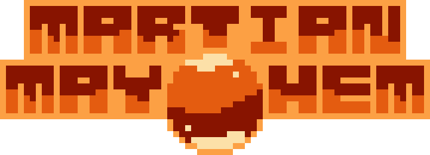
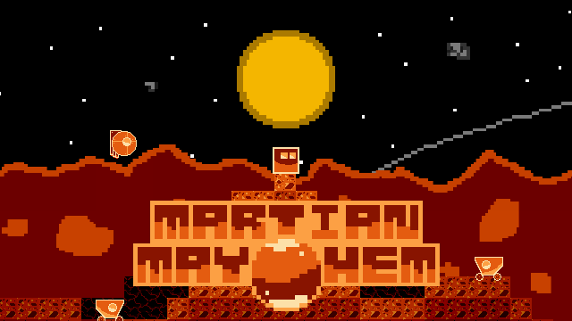
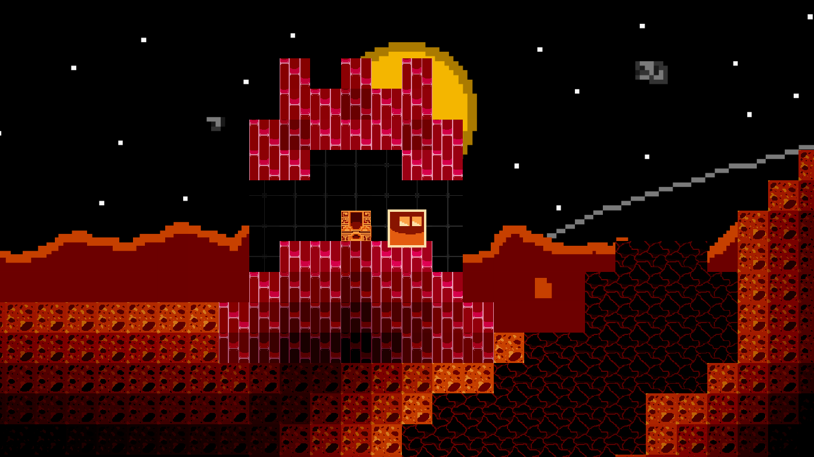
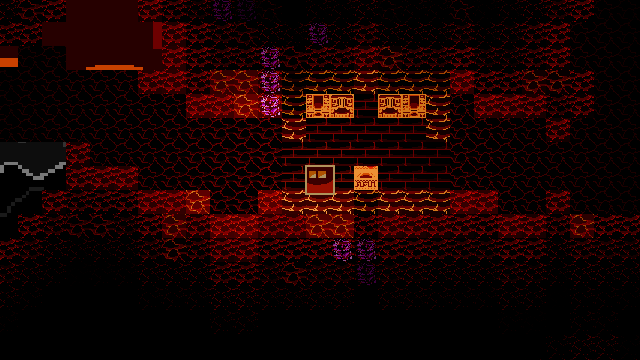
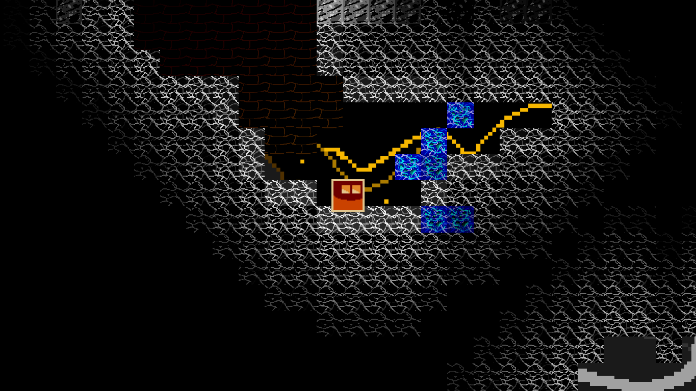
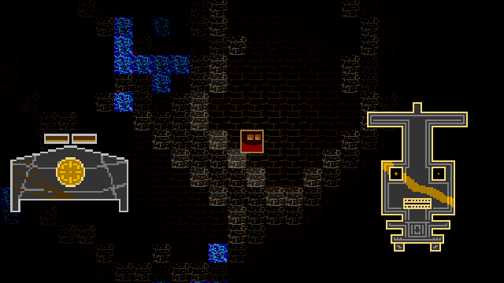

Get ready for the most stellar, magical, and out-of-this-world adventure! A thrilling creative game taking place on the red planet Mars!
Dig!
Delve through different layers of the world to discover different resources. Use what you've found to craft lots of different recipes!
Survive!
The native life forms of Mars may stop you in your tracks, so always be prepared for a battle! Recreate ancient gadgets to summon powerful guardians.
Build!
Your imagination is your limit! Craft over 30 unique items made for buildings, and use some natural resources to give your builds some flair! With so much to make, only you can stop yourself!
Explore!
Check out the local scene! The surface of the world is diverse, with high mountains and gaping chasms. Discover underground bunkers, tread through ancient structures left by alien creatures, and investigate an ancient temple of the sun and moon! Why not take the chance to find out what awaits on the red planet?
Make some discoveries along your way to build your shuttle and escape to Earth! A wonderful journey is just around the corner!

Play around with many different kinds of bricks to make awesome structures.

Craft different stations that can be used to make tools, forge bricks, and recreate certain materials.

Find the remains of meteors that have fallen to Mars.

Walk to the edges of the world to find the solar and lunar biomes, the dusty wonderlands that hold sapphires within.

Face scaringly strong golem enemies in the ancient temple below the surface!
2021 - 2022, The Mayhem Project. By Interstellar Productions. Music by Giuliano Cau /Giulkau. Programmed and Sprited by May. Website by May.
Giulkau's Twitter
Giulkau's Instagram